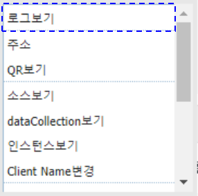
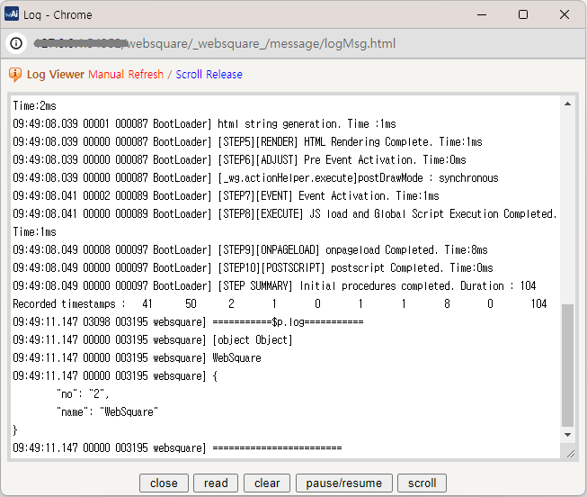
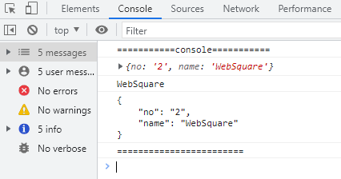

웹스퀘어에서 제공하는 로그 출력 메소드과 브라우저에서 제공하는 로그 출력 메소드를 사용한 예제입니다.
다음은 예제에서 사용한 메소드와 설명입니다.
$p.log: 웹스퀘어에서 제공하는 로그 출력 메소드로 'Textarea'에 출력됩니다.
console.log: 브라우저에서 제공하는 로그 출력 메소드로 브라우저의 개발자 도구를 통해 출력됩니다.
$p.log - 웹스퀘어 API로 로그 출력하기
console.log - 브라우저 API로 로그 출력하기
1
STEP 1: '실행1' 버튼을 클릭합니다.
2
STEP 2: 웹스퀘어 로그 출력 팝업에서 로그를 확인합니다.
예제가 실행된 영역에서 키보드 'ctrl'를 누른 채로 마우스의 오른쪽 버튼을 클릭합니다.
브라우저에 컨텍스트 메뉴가 표시됩니다.
Image 1.브라우저(Chrome) 실행 예시

컨텍스트 메뉴의 '로그보기'를 클릭합니다.
'Textarea'로 만들어진 로그 출력 팝업이 표시됩니다. JSON 객체는 '[object Object]'로 표시되며, 문자열은 정상적으로 표시됩니다.
Image 2.브라우저(Chrome) 실행 예시

1
STEP 1: '실행2' 버튼을 클릭합니다.
2
STEP 2: 브라우저 개발자도구의 콘솔(console)탭에서 로그를 확인합니다.
JSON 객체와 문자열이 모두 정상적으로 표시됩니다.
Image 3.브라우저(Chrome) 실행 예시

'$p.log' 메소드를 사용하여 스크립트를 작성합니다. 첫 번째 인자에 출력할 문자열을 전달합니다.
Example 1.Script
var jsonObj = {"no":"2", "name":"WebSquare"}; var jsonStr = JSON.stringify( jsonObj ); var jsonStrWithTab = JSON.stringify( jsonObj ,null,"\t"); //웹스퀘어 API를 사용하여 로그 출력 $p.log("===========$p.log==========="); $p.log(jsonObj); $p.log(jsonObj.name); $p.log(jsonStrWithTab); $p.log("========================");
'console.log' 메소드를 사용하여 스크립트를 작성합니다.
Example 2.Script
var jsonObj = {"no":"2", "name":"WebSquare"}; var jsonStr = JSON.stringify( jsonObj ); var jsonStrWithTab = JSON.stringify( jsonObj ,null,"\t"); //console 객체를 사용하여 로그 출력 console.log("===========console==========="); console.log(jsonObj); console.log(jsonObj.name); console.log(jsonStrWithTab); console.log("========================");
[온라인 링크] www.w3schools.com의 console 객체 : https://www.w3schools.com/jsref/obj_console.asp